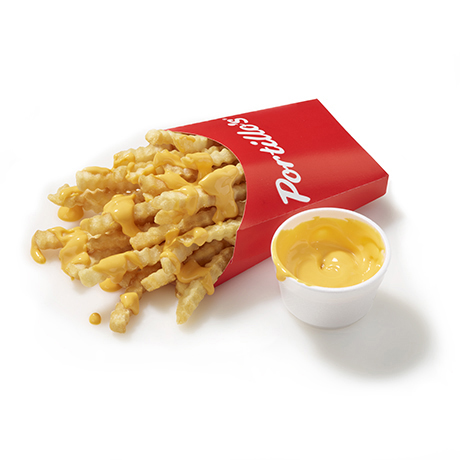

Sides and Soup

- Cheese Fries
One of our most craveable menu items, this drool-worthy, smooth cheddar cheese sauce tastes best as a dipping sauce for our salty, crinkle-cut french fries.
- Onion Rings
Deep fried, made-to-order onion rings.
- Garlic Bread
*Only available at Barnelli's locations
- Chicken Tenders
Four deep fried chicken tenders.
- Garden Side Salad
Everything includes Romaine lettuce topped with shredded red cabbage, cucumbers, shredded cheese, diced tomatoes, and croutons. Served with your choice of dressing on the side
- Tamale
An original menu item served at “The Dog House” in 1963, the classic tamale is made from a tasty blend of cornmeal filled with ground beef, garlic, and seven secret spices.
- Chicken Noodle Soup
140 Calories
- Cup of Chili
Everything includes cheese and onions.
- Jumbo Cheese Sauce
Our same drool-worthy, smooth cheddar cheese sauce, but bigger!
The Homepage
Menu